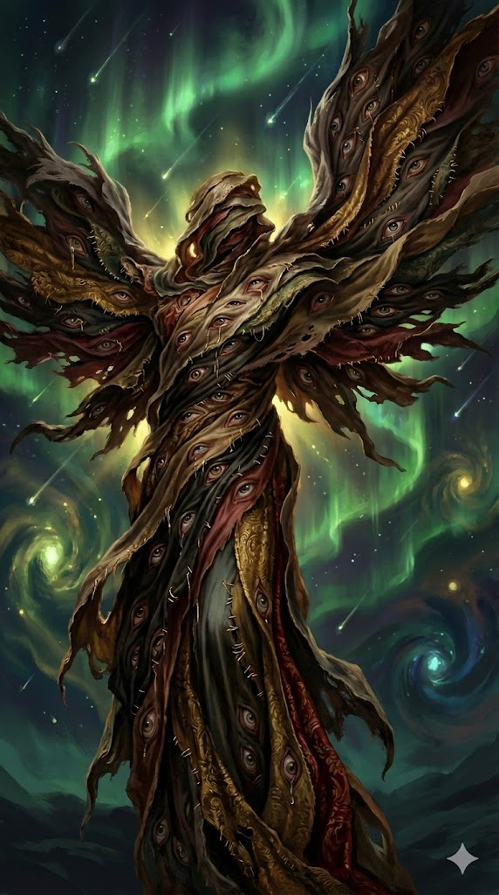

Cephala Fortina¶

“Three days in one place and I feel offended by the wallpaper. A week and I'm counting the stones in the road. Two weeks? I start to feel like the stones are counting me.”
Chronically drifting card sharp, one night assailed by a mysterious inquisitor. Her dormant celestial blood ignited, unleashing wings of light and a bond to the mysterious Tattered Seraph. Now she is on a quest to find her own vanished people that only the Seraph remembers.
Keywords: Melancholy, trickster, mystery, roleplay, character driven play, cosmic horror
Character overview¶
- Race: Aasimar
- Class: Warlock (Great Old One)
- Background: Charlatan
- Alignment: Chaotic Neutral
- Party Role: Celestial con‑artist, blaster and party face
Quick Intro
At the Table
- Melancholic trickster with a kind heart.
- Unflappable, charming and as likely to cut your purse as to buy you a drink.
- Cursed by Wanderlust that forces her to keep moving through the world.
- Warlock blaster build with battlefield control spells. On the squishy side.
Backstory (Short Form)
Cephala grew up as the adopted showpiece of the wealthy Fortina perfumers, learning etiquette and rare scents, but never warmth. She left early, drifting from city to city as a card sharp and con artist until the Inquisitor Morben cornered her in a dead-end alley. Her angelic blood ignited in self-defense, manifesting wings she didn't know she had. Now, bound by a pact with the Tattered Seraph—a broken, cryptic entity of torn fabrics and watching eyes—she hunts for the lost remnants of her erased people while staying one step ahead of the man who witnessed her awakening.
Full context and story
Background story¶
Cephala’s earliest memories are of scent. The Fortina family built their fortune on rare oils, distillates, and perfumes traded across seas. Their manor reeked in layers of jasmine, rose, and frankincense. To guests, Cephala was a showpiece, the strange pale child adopted by the perfumers, raised in silk and sandalwood. “Our little angel,” they would laugh, patting her head before drifting back to their gilded intrigues.
She never felt it. The Fortinas clothed her, taught her the art of smiling at banquets, even paraded her before merchants as proof of their taste. But warmth was never part of the deal. Every column of numbers, every lecture on heritage and refinement, only deepened her suspicion: she wasn’t meant for this family, not really. She learned to play the part, to smile sweetly while hiding coins, to shuffle cards with street kids when she should have been learning etiquette. The Fortinas gave her a name, but the alleys taught her how to live.
It was there, under tavern lamps and in games of chance, that she found herself. She discovered she could read people like she read perfume notes: sharp, sweet, bitter, base. Tricks with cards came easy, and she learned to lie as smoothly as the Fortinas bottled musk. Soon, “Cephala” was more at home fleecing drunk gamblers than drifting through perfumed salons.
A little too early, she started drifting. She never looked back to the Fortinas, and they never asked for where she went. Their relation of convenience was over. She became a card sharp and con-woman, moving from city to city with charm, sleight-of-hand, and just enough lies to stay ahead of the law. But that changed the night she unknowingly tried to con the man named Morben, an inquisitor in disguise.
He saw through her ruse without effort, and tried to apprehend her in a viciously efficient burst of divine law enforcement. A short chase ended with him cornering her in the dead end of a back alley. Pulse racing, Cephala saw a strange binding iron appear in his hand, the end of her wandering days made reality. In that moment, ancient divine blood ignited in her. Sprouting angelic wings in a burst of light, she barely managed to flee the terrifying man.
Soon, she began dreaming of the Tattered Seraph, a broken, cryptic entity that named what she had always known: her wanderlust was not a flaw. Her exile was not failure. She was never Fortina. She was the echo of something older, erased and forgotten, the last of its mystically vanished people. Now bound by a pact she barely understands, Cephala hunts for the lost remnants of her true bloodline, and watches the shadows for the inquisitor who witnessed her awakening.
Her patron equipped her to be a celestial detective, with powers not of this world, and a notebook she cannot lose (Pact of the Tome). Now she is setting out to solve the greatest mystery of her life. A presumably angelic people vanished, and an inquisition hiding the truth.
Did her entire people get whisked away by the Inquisition, and if so... why? Also, why does nobody remember they ever existed? All Cephala knows, is that her heritage is manifest, and the Tattered Seraph speaks to her. The quest before her seems hopeless, but she isn't in the habit of quitting. Perhaps, she may even come to understand the mystery of her inscrutable Wanderlust.
The Tattered Seraph¶
 The Tattered Seraph wanders the thresholds between worlds, unable to manifest outside of dreams and pocket dimensions. It is veiled in layer upon layer of torn fabrics, stitched with ten thousand watching eyes, blinking, gazing, staring, weeping, sleeping. Its voice is a fragmented choir of many voices and one, every phrase broken, arrhythmic and labyrinthine, as if it truly does not know what the end of every sentence will be as it speaks them.
The Seraph doesn't so much issue commands as make requests, and it asks strangely. It offers visions like mirror shards, some clear, some murky, all enigmatic, frustrating, but also what seems like earnest attempts at communication from a being at once extraordinarily powerful and pitifully incoherent. It claims to have once been worshipped by a people now erased from time, and Cephala may be their last spark, or final witness.
When Cephala woke up to her lineage, she could finally be contacted by the Tattered Seraph. Through that connection, it now has a unique opportunity to set right what was lost. But it only has this one chance, and Cephala may not have been its first pick for the job, if it had a choice. Now, it can only do so much to aid her on her quest.
It is impossible to know whether it is truly a God, or a ghost of an erased memory, or a consequence of unholy and uninformed choices in the distant past. What is certain is, it remembers something the world wants forgotten.
Mechanics and flavor¶
The Seraph as a patron uses the Great Old One build, but flavors her Warlock spells to feel more "broken divinity" and less "tentacle monster". Her Eldritch blast looks more like weirdly dirty and ragged blasts of divine light, or the roar of a myriad rushing pieces of broken stained glass. Spells like Arms of Hadar look more like thrashing rags with thousands of eyes rather than tendrils.
Cephala has a strong scent memory of the Seraph: rancid rose oil, mildew and old parchment. But aspects of it changes, the notes fractured just like her patron. Some nights the rose is almost fresh, even hopeful. Other nights it’s pure rot, enough to turn her stomach. The mildew in its many-layered textiles can recede into sun-warm wool, or breathe like pungent, overbearing sighs of decomposition.
Personality¶
Cephala wants to understand herself and, more importantly, why she wanders. Why she can’t stay. Why belonging feels like drowning. She doesn’t want to grow roots, but she also never asked to be in endless motion. She wants to know why she’s built this way. She’s out of sync with what she sees in everyone else: people cling to family, home, tradition. She can fake that in the moment, but the truth is her soul feels alien to this world.
Every town looks the same after a while, names and faces blur. She fears she’s wasting her life chasing roads, but staying still too long is not an option. Due to this, she keeps her horizons short: she plans for tonight’s bed, tomorrow’s purse, maybe the next week’s con.
She will, however, care fiercely about you and your needs in the moment, because she's not a bad person. She enjoys helping others, and makes friends quickly, since she's nonjudgmental and charming. But she knows she can't build futures with people, and getting attached to someone will just make things more painful later, as she's forced to move on. She's left many heartaches behind her, and stopped trying to explain why, or justify herself.
Cephala likes trinkets, little mementos that carry meaning in the moment. But she never holds onto them. She always ends up never owning more than she can comfortably carry. Those trinkets often become little gifts of farewell instead, a quiet "I cared, I just can't stay".
When she’s bored or anxious, she shuffles her card deck. It's both her rosary and stress ball.
She never redecorates. If she’s given a permanent room or safehouse, she leaves it bare. Putting up curtains or hanging a keepsake would feel like lying. She can fall asleep in a ditch or a silk bed, and either way doesn't truly matter, because nothing really sticks. The next night will be different. Change is her only constant.
Cards, dice, bets on rat races. She likes watching how people cheat, how they gloat, how they fold. She studies humanity through its little vices, like a tourist looking in at a life she can never truly participate in.
She’s the kind to strike up a chat with any stranger she bumps into on the road, not because she needs friends but because every new person is new in their own unique way to her. If she's tied for money she may scam them. If she liked them, she may leave a note with an apology. If they're tied for money, she might end up being the one helping them instead.
Personality traits Sharp sartorial instincts. Hates over-planning/analysis paralysis, is genuinely kind and doesn't express glee when she swindles someone. She's not the archetypal sad clown, but rather a melancholic trickster.
Ideals Cephala doesn't believe in ideology. She believes in the here-and-now, and what her heart tells her. It often leans to kindness, sometimes toward pettiness. She's not perfect, and doesn't claim to be.
Bonds Cephala is structurally bad at holding any bonds at all. She knows many people, but they're ephemeral to her. That's not to say some people haven't bonded to her. Maybe that tavern hand or sellsword she had that brief romantic encounter with six months ago and promptly forgot hasn't forgotten about her? How many people did she con? She truly doesn't remember. But they might remember her all too well.
Flaws Planning beyond the immediate gives her hives. She'll spend an hour choosing the right scarf but can't commit to next week's route. She's generous in the moment, terrible at sustained care. She'll buy rounds, slip coin to beggars, charm her way into getting others out of trouble. But she won't remember your birthday, write back, or check if you're okay three towns later. But it's not cruelty or negligence, she genuinely doesn't track those obligations. People exist vividly when she's with them and fade like perfume when she's gone.
Playing Cephala¶
When others talk about their families or homes, she might go quiet, or give a sweet joke to cover discomfort.
The Tattered Seraph has given her a task that fundamentally goes against her nature: something that requires tenacity, holding on to clues in memory, taking notes and weaving the fragments into a whole. This can be both stressful and a healing process for Cephala. In either case, she's the only one who can do it, and the only chance for her patron to find whatever it is it needs.
Cephala is very sensual, in the sense that the world is textured to her. She smells it, watches it, listens to it, and maybe foremost: touches it. Always describe how she runs her hands and fingers over surfaces, as if reading them with her fingertips. Her eyes linger on hemlines and accessories, makeup smudges, the smell of damp clinging to yesterday's clothes, the feel of stepping in mud that's a little waterlogged. You can let it color the way she describes the world to others. It could also be the way she intuits the clues to the riddle her patron has laid before her. She doesn't go by investigation. She goes by vibes and intuition alone.
Consider Cephala's relationship to the notebook (Pact of the Tome) that she can't lose. As soon as she learns it keeps reappearing, how does she treat it? Does she forget it everywhere? Does she feel stressed that it constantly reminds her of the mission that was shoved upon her? Does it feel like the first anchor in her life, for better or worse? A way to not stop moving, but to start making sense of her drifting?
Discovering her Aasimar background would have a profound impact on most people. Cephala isn't oblivious, but she leans more into the "neat, I have wings now!" coping style. She doesn't question it, or her new eldritch powers. When she learns new and more powerful spells, have her use them almost accidentally, like she never planned to do it, but just went with her intuition.
Table dynamics¶
Most parties are in movement often enough, so it would make sense to let Cephala travel together with them. In order to keep party dynamics smooth, just frame it as her wanderlust coinciding with what the party is doing. But after a few sessions, these people will likely be the first relationships she's had in her adult life that's lasted for longer than a week.
There are several ways this may play out. She may feel anxious at first, feel naked and judged by the fact that not only is she learning about them, but they are also learning about her. Learning to be okay with deepening friendships can in itself be a small character arc for her, if you choose.
Her motivation often boils down to “what’s behind that corner?” or “what happens if I try this?” rather than loyalty or legacy. She's fluid like water. Let her go with whatever choice the group makes that seems to best satisfy her curiosity. Push back on staying too long in one spot. And if the party still decides to do it, have Cephala pay the price for it. She could start climbing the walls and tearing her hair a bit into week two.
But remember, a character having Wanderlust isn't a mandate to sabotage the table's fun or derail the DM's plans by insisting on always being on the move!
Instead, when forced to stay put for a while, see this as a chance to both play out another side of Cephala and also prove to the party they're genuinely important to her. The more you have her suffer during their prolonged stay, the more she also proves what she's willing to go through for their sakes. This is potentially a more group-oriented and fun way to characterize her at the table, and can invite your fellow players to show kindness, try to help, or even get involved with solving the mystery of Cephala's condition and the Tattered Seraph.
Sample quotes¶
“Names are like outfits. I’ve got a whole wardrobe stuffed in my sleeve.”
“Three days in one place and I start feeling offended by the wallpaper. A week and I'm counting the stones in the road. Two weeks? I start to feel like the stones are counting me.”
“There's a fishing village up north where every single person smells like cinnamon. Not the fish, not the docks, just the people. Even the children. So I asked why. They asked what cinnamon was. Yeah, so that's the farthest north I've ever been.”
“It’s not lying if you’re entertaining. And I can be very entertaining.”
“Here, take this medicine. I don’t need it where I'm going. ...Where am I going? Guess I'll know when I get there.”
“Just call me whatever you remember. I’ll be someone else by the time you forget. Just not Sue. That name gives me hives.”
“Perfume gives people ideas. Musk says power, rose says romance, lavender says trust. And this little slice of scent heaven? This is just a vanilla bun, still warm. Not for much longer though. Want half before it's gone?”
“Got chased out of Millhaven for 'corrupting the youth.' All I did was teach them a card trick? Why should I be held responsible they all used it to swindle their parents out of doing their chores?”
“Don't mention it. Seriously. I won't be around to collect anyway. You take care now, yeah?”
“You paid the toll to that guy? The one with the differently stitched buttons? Sorry but you got got. The real toll booth is likely over the hill.”
“I keep flipping through these notes. Nothing makes sense. Sometimes I just sketch what I see. Landscapes, back alleys, dogs, funny shoes. Then I go back to see if I sketched something I don't remember seeing. It's like reading another person's life.”
For the DM only
Explore the possibility that the Tattered Seraph might in fact be Cephala's lost people, somehow magically whisked away and merged into a single being, and having their minds mercilessly broken in the process. It could set Cephala up for extremely hard moral decisions later in the campaign, having to decide whether to keep the Seraph in darkness, or try to help it, or even end its suffering.
The encounter with Morben the Inquisitor¶
Morben wasn't hunting a card sharp, but her in particular. The Inquisition has been systematically erasing Cephala's people for generations, not through genocide but through ontological removal. They're not just killing them; they're unwriting them from history, memory, collective knowledge.
(Here's where you as DM get to decide a reason why this happens, that fits your campaign: Were her people serving something the Inquisition considers abyssal/heretical? Were they witness to something that threatens church power? Are they living proof of a theological inconvenience?)
Morben tracks celestial bloodlines through a combination of records, divination, and good old-fashioned detective work. He found Cephala through the Fortina adoption papers (which the family thought destroyed, but the Inquisition keeps everything). He used the charlatan charge as cover—arrest her for cards, extract her quietly, no public awakening of dormant powers.
He didn't expect her blood to ignite. Most latent celestials never manifest. But confrontation + mortal danger = trigger. Now he knows she's active, which makes her both more dangerous and more valuable.
Possible Inquisition Motivations:
- Her people were bound to a celestial entity the Church considers heretical/rival
- They possessed knowledge of divine mechanics the Church wants monopolized
- They're proof that divinity isn't hierarchical the way the Church claims
- They rejected settled worship in favor of wandering devotion. Maybe they were a group of nomadic itinerants (theological threat to institutional religion)
- The Tattered Seraph may be the result of a horrible reality-bending magic experiment (perhaps a very old, failed Church-sanctioned experiment to bind a celestial host into a single 'perfect' guardian, but backfired into this tattered horror), a thing that should not be. It wants to break loose, and contacts all descendants of its people it can feel. But if it were ever released on the material plane, things would go bad... quickly. The Inquisition is tasked with tracing all descendants down and performing a ritual that cuts them off from the Tattered Seraph, and its eldritch powers. It's basically the Church trying to be accountable for the mistakes of its ancestors. The players could even meet other "severed" Aasimars living out perfectly happy, but ordinary lives.
Make it ambiguous from the start whether the Inquisition is purely corrupt or genuinely believes they're preventing some cosmic catastrophe. That could be way more interesting than another "church bad" plot. Also, (if the table is fine with it), what if they actually capture Cephala at some point and "disarm" her by severing the connection to the Tattered Seraph? A new arc could be to help Cephala re-establish the connection, turning her mystery from something that was shoved upon her into something she chose herself.
How to unveil the mystery of the Tattered Seraph¶
Here are som ways to introduce clues to the mystery of the Tattered Seraph that should work in most campaign settings, whichever way you decide to lean as to the true nature of the patron:
- Junior Inquisition investigators working for Morben may be found out by the party, carrying clues in letters of instruction.
- The Tattered Seraph can't interact with the world, but can provide Cephala with clues. But they're *weird*. If it needs her to grab an item in a church, she may look that way and have a vision of the shadows around the door *filled* with hundreds of the eyes of the Seraph, staring, blinking, weeping. It's horrific and pitiful.
- Avoid using the actual scent of the Seraph in the game until they reach a place where the veil between the worlds is thin, or even if they find the place where the Seraph was sealed away, or created, or both.
- The Wanderlust of Cephala may not be as random as she thinks. Clue an intelligent PC in the party to track her movements on a map. Describe them making a geometric pattern. Then throw that same geometric pattern on whatever piece of intel you want the party to explore. She's been reenacting a sacred forgotten symbol with her own feet for years, tracing it on the very surface of the world even after history itself has forgotten it. The truth of who she is may not be available to her directly, but it is written into her bones. Her body *knows*.
- Lean into Cephala's vibes- and intuition-based sensory style of reasoning. Have her follow olfactory clues: something that smells exactly like the Tattered Seraph in her dreams. Or have her recognize the textures of material, or a certain shade of crimson and texture in a fabric in the marketplace. It looks and feels identical to one of the myriad strands of textile she remembers from her visions of the Seraph. Turns out the fabric is a rare traditional weave from a certain region. The merchant doesn't know more, but it's a lead.
- If the player feels stumped and has missed several clues, have the Seraph intervene with a new vision, or have messages left in her notebook that she doesn't remember writing. The Seraph is clearly a broken being, and who knows who or what aspect of it decided to intervene.
- As a last-ditch resort, have a junior inquisition investigator defect and spill the beans as to what little he/she knows. Maybe their conscience is weighing too heavy and they want to come clean, pointing the party in the right direction before going underground and fleeing the country.
Mechanical build (lv 5) and PDF download
| STR | DEX | CON | INT | WIS | CHA |
|---|---|---|---|---|---|
| 8 (-1) | 14 (+2) | 14 (+2) | 10 (+0) | 12 (+1) | 18 (+4) |
Combat Stats¶
| AC | HP | Hit Dice | Speed | Initiative | Prof. Bonus |
|---|---|---|---|---|---|
| 15 | 38 | 5d8 | 30 ft. | +2 | +3 |
Saving Throws: Wisdom: +4, Charisma: +7 Resistances: Necrotic, Radiant
Proficiencies¶
Skills: Deception +7, History +3, Insight +4, Perception +4, Persuasion +7, Sleight of hand +5
Armor: Light Armor | Weapons: Simple Weapons
Tools: Forgery Kit, Playing Card Set | Languages: Common, [+2 common languages]
Feats¶
- Spell Sniper: Bypass cover, cast in melee without disadvantage, +60 ft. spell range
- Lucky: 3 Luck Points per long rest (advantage/disadvantage manipulation)
- Skilled: 3 additional skill/tool proficiencies
Equipment¶
Glamoured Studded Leather, Sickle, 2x Dagger, Forgery Kit, Playing Card Set, Book of Shadows